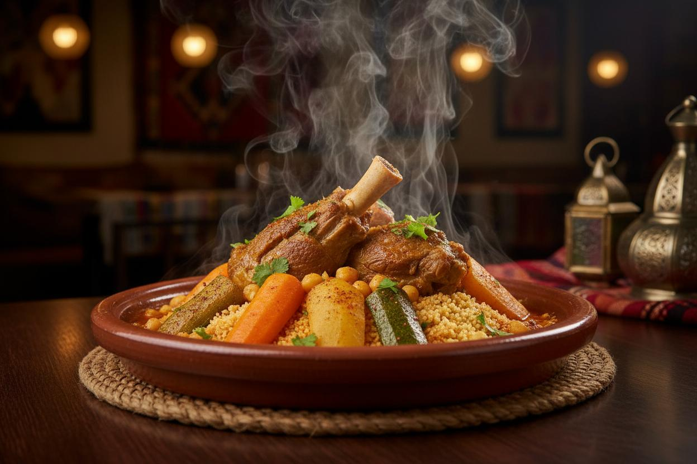
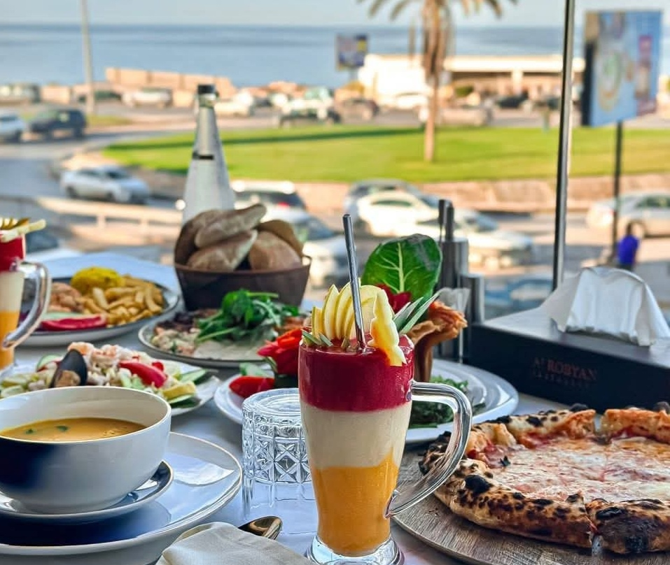
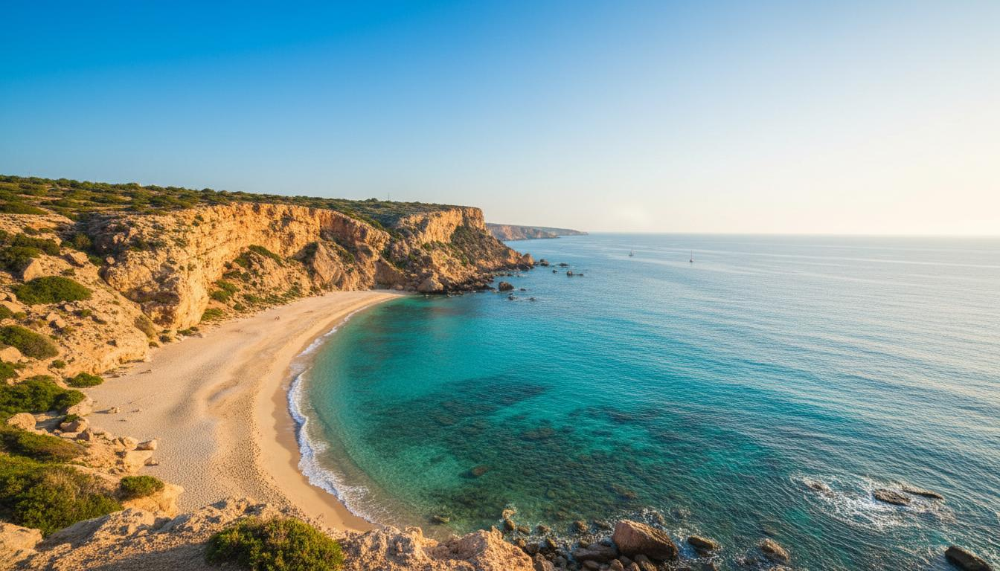
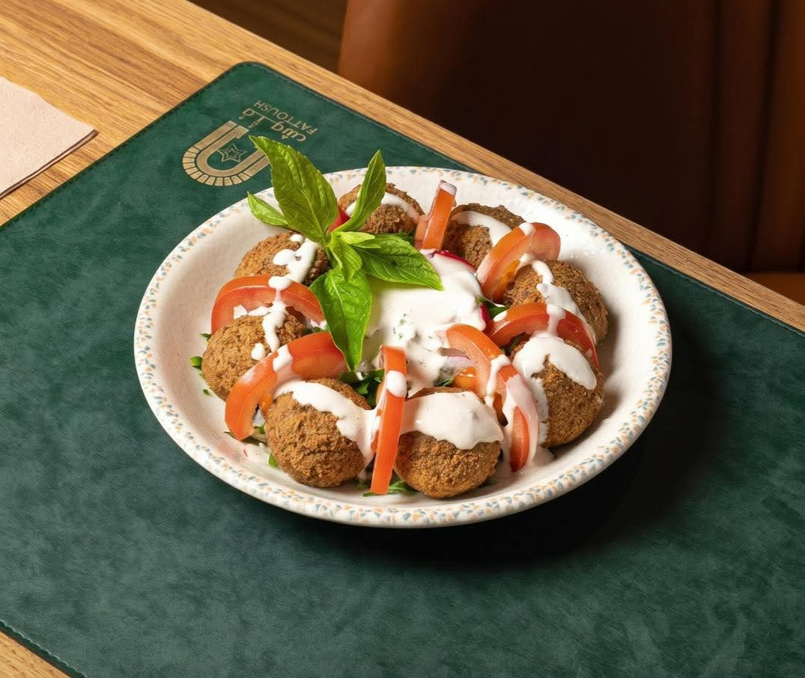
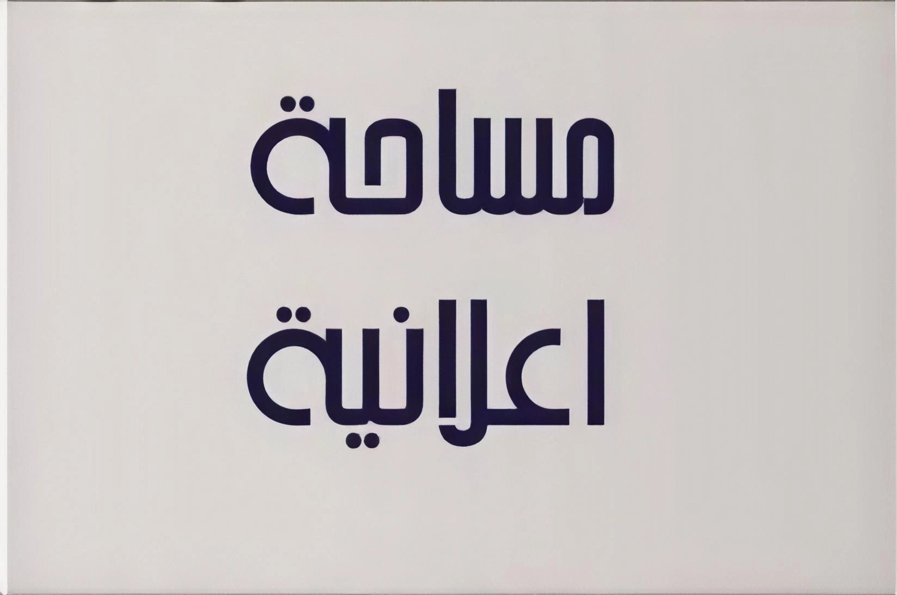

مطعم الشريف
أشهر مطعم ليبي تقليدي في طرابلس. يقدم الكسكسي الليبي والبازين والأطباق الشعبية الأصيلة في أجواء تقليدية.
+218 21 333 4444 | 12 م - 11 م
مطعم المائدة
مطعم عصري يقدم مأكولات ليبية معاصرة وعالمية. تصميم أنيق وأجواء راقية مناسبة للعائلات.
+218 21 444 5555 | 1 م - 12 ص

مطعم الروبيان
مطعم فاخر بإطلالة رائعة على البحر. يقدم مأكولات بحرية طازجة ومشويات.
+218 21 555 6666 | 12 م - 11 م

مطعم باله
مطعم عصري بإطلالة مباشرة على البحر. يقدم مأكولات بحرية طازجة وأطباقاً عالمية.
+218 61 222 3333 | 12 م - 12 ص

مطعم الصياد
متخصص في الأطباق البحرية الطازجة. يشتهر بسمك القاروص والجمبري المشوي والحساء البحري.
+218 61 333 4444 | 11 ص - 11 م

مطعم فتوش
مطعم يقدم المأكولات الشرقية والأندلسية في أجواء أندلسية فاخرة. موسيقى حية وخدمة متميزة.
+218 61 444 5555 | 1 م - 12 ص

مطعم بيت النجع - مصراتة
مطعم مأكولات شعبية. أطباق منوعة طازجة ومشويات بإطلالة رائعة.
+218 51 222 3333

مطعم الجبل - البيضاء
مطعم تقليدي بإطلالة جبلية خلابة. يقدم الأطباق الجبلية والمأكولات الشعبية في أجواء طبيعية.
+218 81 333 4444

مطعم الواحة - غدامس
أطباق صحراوية تقليدية بليبية أصيلة. تجربة تناول طعام فريدة في أجواء صحراوية.
+218 41 555 6666

مساحة - اعلانية
مساحة إعلانية للمطاعم في ليبيا للاستفسار واتساب +218917021437 .
+218 41 555 6666